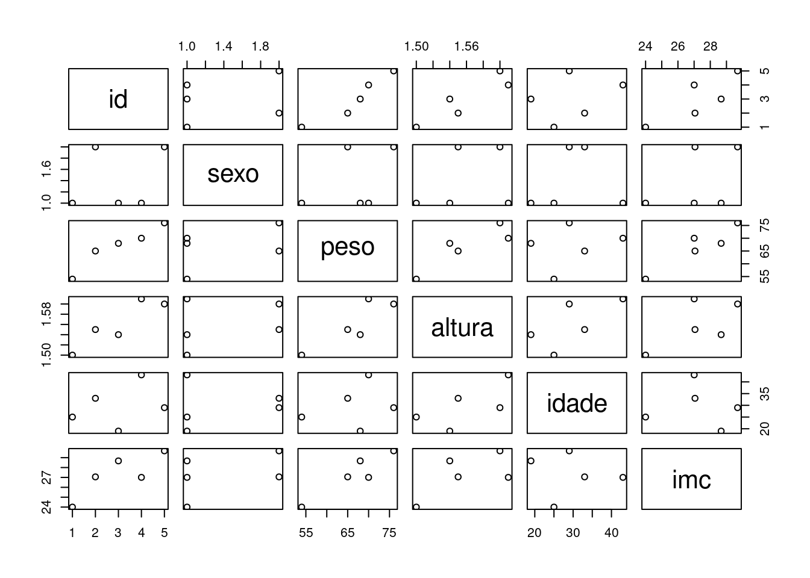

4 Objetos no R
O R é uma linguagem baseada em objetos, ou seja, quer dizer que tudo o que for usado no R está guardado na memória do computador sob a forma de um objeto.
Todos os objetos em R tem uma classe associada, como: vetores, matrizes, data frames, list, numeric, listas, funções, expressões e muitos outras.
Para armazenar algum valor (ou texto) em um objeto pode ser usado simbolo de atribuicao <- ou o simbolo de igualdade =. Preferencialmente usamos <-. Podemos verificar os objetos guardados no “Environment” do R. O “Environment” é uma aba que fica na janela do canto superior direito.
4.1 Classes dos objetos
Todo objeto tem uma classe, que define como o R o enxerga e como trata o objeto. O comportamento das funcoes do R podem ser bem diferentes de acordo com a classe do objeto. É possível verificar a classe do objeto com a função class().
4.1.1 numeric
Os objetos de classe "numeric" são números reais:
## [1] "numeric"## [1] "numeric"## [1] 4.64.1.2 character
Os objetos de classe "Character" são textos, indicados por aspas.
## [1] "character"## [1] "character"## Error in a + b: argumento não-numérico para operador binário# o texto, ou string em ingles, pode ser longo
nome1 <- "João da Silva"
nome2 <- "Cruz"
class(nome1)## [1] "character"## [1] "character"Para juntar dois textos, podemos usar a função paste():
## [1] "João da Silva Cruz"4.1.3 Date
Muitas vezes precisamos guardar datas. Nesse caso, a classe mais comum é Date. Como há muitas formas de escrever uma data, precisa explicar para o R seu formato.
Fazemos isso indicando, através de uma string, quem é o dia, o mês e o ano:
## [1] "Date"## [1] "2022-10-01"Podemos somar dias:
## [1] "2022-10-06"## [1] "2022-10-06" "2022-10-11" "2022-10-21"## [1] "2022-10-02" "2022-10-03" "2022-10-04" "2022-10-05" "2022-10-06" "2022-10-07" "2022-10-08" "2022-10-09" "2022-10-10" "2022-10-11"Note que todos os objetos acima tem apenas um elemento:
## [1] 1## [1] 1## [1] 1## [1] 14.2 Convertendo classes
Em algumas situações, acontece do R importar um objeto com a classe errada e precisarmos converter.
Pode ser que ele entende que é um character, mas é um número, ou uma data. As funções de conversão geralmente começam com as., como: as.numeric(), as.Date(), as.character():
## [1] "character"## [1] "character"## Error in a + b: argumento não-numérico para operador binárioVamos transformar esses objetos do tipo character() em número, usando a funçãa as.numeric():
## [1] "numeric"## [1] "numeric"## [1] 4.64.3 Juntando elementos
Os vetores são sequencias de valores. O modo mais simples de criar um vetor é utilizar a função de concatenação c(), como fizemos, separando os elementos que formam o vetor por vírgula. Por exemplo, criar um vetor de tamanho 4, contendo os valores (0.5, 7.2, -1, 6):
## [1] "numeric"## [1] 4## [1] 0.5 7.2 -1.0 6.0Vetor de objetos character (texto):
## [1] "character"## [1] 2## [1] "feminino" "masculino"Vetor de datas:
## [1] "Date"## [1] 2## [1] "2022-10-01" "2022-11-01"E podemos juntar elementos de tipos diferentes?
R: Até podemos sim, mas serão convertidos para um formato em comum! Observe:
## [1] "1" "a"## [1] "character"Viu só? O R convertou tudo para character().
4.4 Operações com vetores
Além das operações que podemos executar sobre os vetores (mean(), sum(), min(), max()) que vimos no capítulo anterior, podemos executar operações entre vetores diferentes.
Suponha, por exemplo, que você mediu peso e altura de cinco pessoas:
Experimente: calcule o IMC das cinco pessoas (peso/altura^2).
4.4.1 Indexação dos vetores
Os elementos de um vetor podem ser acessados por meio de um índice. Para poder acessar os valores, coloca-se o nome do vetor seguido de colchetes [], e dentro do colchete um numero que indica a posição do elemento que se quer acessar. Assim, se quiséssemos acessar o 3 elemento do vetor peso usaríamos peso[3].
## [1] 68## [1] 1.54## [1] 28.672634.5 Listas: Juntando elementos diferentes
No R, não podemos armazenar objetos de tipos diferentes em vetores. Mas isso é possível utilizando uma estrutura mais flexível, chamada de lista:
## $sexo
## [1] "feminino"
##
## $idade
## [1] 20
##
## $pesos
## [1] 43 45 42## [1] "list"## [1] 3Para acessar elementos da lista, usamos o $:
## [1] "feminino"## [1] "character"4.6 Data frames
Os data frames são os equivalentes a uma tabela no R, e são mais úteis para guardar os dados.
Ao importarmos bancos de dados para o R, geralmente estes são salvos em objetos do tipo data.frame.
Vamos criar um data frame para guardar dados de cinco pessoas:
id <- c(1,2,3,4,5) # numero identificador da pessoa, variavel numerica
sexo <- c("F", "M", "F", "F", "M") # sexo : variavel tipo character
peso <- c(54, 65, 68, 70, 76)
altura <- c(1.50, 1.55, 1.54, 1.61, 1.60)Agora vamos colocar todos em um data.frame:
## id sexo peso altura
## 1 1 F 54 1.50
## 2 2 M 65 1.55
## 3 3 F 68 1.54
## 4 4 F 70 1.61
## 5 5 M 76 1.60## [1] "data.frame"Agora note que temos as variáveis nas colunas e os registros (as pessoas) nas linhas. Isso é muito importante. No R, esse é um dos padrões de formato mais utilizados.
Para acessar ou extrair uma coluna específica, usamos novamente o operador $:
## [1] 54 65 68 70 76## [1] 1.50 1.55 1.54 1.61 1.60De forma semelhante, podemos criar uma nova variável no data.frame:
## id sexo peso altura idade
## 1 1 F 54 1.50 25
## 2 2 M 65 1.55 33
## 3 3 F 68 1.54 19
## 4 4 F 70 1.61 43
## 5 5 M 76 1.60 29Podemos, inclusive, criar variáveis fazendo contas com as existentes!
## id sexo peso altura idade imc
## 1 1 F 54 1.50 25 24.00000
## 2 2 M 65 1.55 33 27.05515
## 3 3 F 68 1.54 19 28.67263
## 4 4 F 70 1.61 43 27.00513
## 5 5 M 76 1.60 29 29.68750Exercício: crie uma nova coluna com a altura em cm (multiplique por 100).
4.6.1 Funções úteis para data frames
A função summary() faz um compilado das medidas resumo das colunas do nosso data.frame:
## id sexo peso altura idade imc
## Min. :1 Length:5 Min. :54.0 Min. :1.50 Min. :19.0 Min. :24.00
## 1st Qu.:2 Class :character 1st Qu.:65.0 1st Qu.:1.54 1st Qu.:25.0 1st Qu.:27.01
## Median :3 Mode :character Median :68.0 Median :1.55 Median :29.0 Median :27.06
## Mean :3 Mean :66.6 Mean :1.56 Mean :29.8 Mean :27.28
## 3rd Qu.:4 3rd Qu.:70.0 3rd Qu.:1.60 3rd Qu.:33.0 3rd Qu.:28.67
## Max. :5 Max. :76.0 Max. :1.61 Max. :43.0 Max. :29.69A função plot() também é muito útil, e não só para data frames.

Qual o tamanho do data.frame?
## [1] 5 6O data frame possui 5 linhas e 6 colunas.
4.6.2 Filtros
Podemos filtrar um dataframe utilizando a função subset() e especificando a condição:
# para extrair os dados das mulheres:
dadosF <- subset(dados, sexo == "F") # note que estamos usando == pq é uma comparacao
dadosF## id sexo peso altura idade imc
## 1 1 F 54 1.50 25 24.00000
## 3 3 F 68 1.54 19 28.67263
## 4 4 F 70 1.61 43 27.00513# para extrair os dados das pessoas com pelo menos 1,6m:
dadosa <- subset(dados, altura >= 1.6)
dadosa## id sexo peso altura idade imc
## 4 4 F 70 1.61 43 27.00513
## 5 5 M 76 1.60 29 29.68750# para extrair os dados das pessoas mulheres pelo menos 1,6m:
dadosaF <- subset(dados, altura >= 1.6 & sexo == "F") # note que estamos usando == pq é uma comparacao
dadosaF## id sexo peso altura idade imc
## 4 4 F 70 1.61 43 27.00513Podemos filtrar também utilizando os índices de linha e coluna dentro dos colchetes: [linha,coluna]:
## [1] 1.54## [1] 1.54## [1] 1.50 1.55 1.54## [1] 1.50 1.55 1.544.6.3 Filtros com condições lógicas
Outra forma de fazer filtros no data frame é através de condições lógicas. Geralmente utiliza algum operador lógico, como >=, >, == (não somente =, pois esse é para atribuição), <=, != (diferente).
Observe:
Retornando somente os dados de pessoas com mais de 1.60:
## id sexo peso altura idade imc
## 4 4 F 70 1.61 43 27.00513Somente pessoas do sexo masculino:
## id sexo peso altura idade imc
## 2 2 M 65 1.55 33 27.05515
## 5 5 M 76 1.60 29 29.68750Pessoas com idade > 30:
## id sexo peso altura idade imc
## 2 2 M 65 1.55 33 27.05515
## 4 4 F 70 1.61 43 27.00513